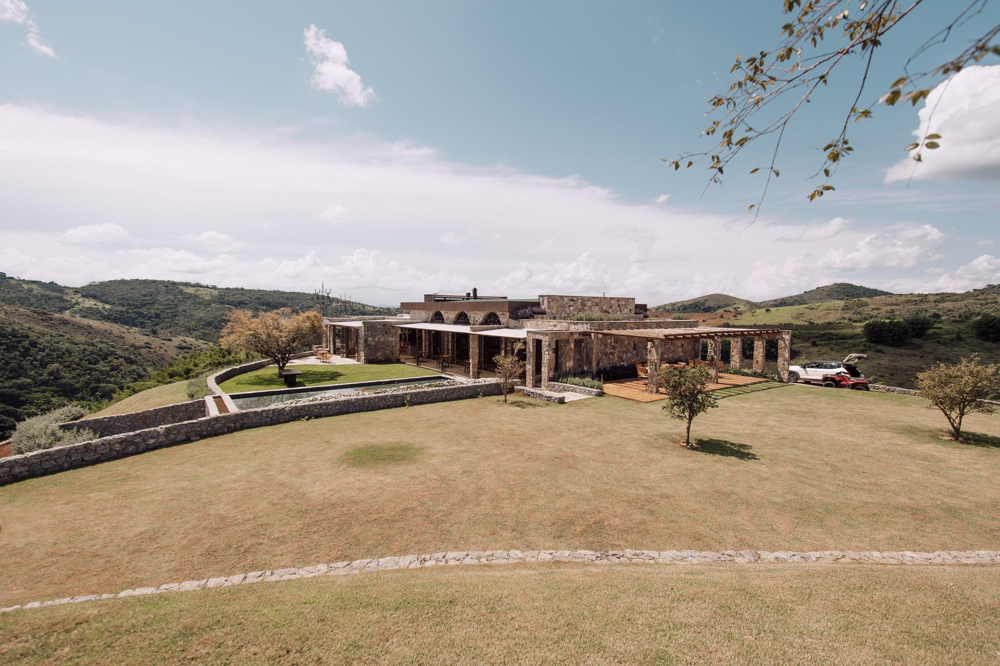

O ano da vinha
A dupla poda torna a Villa Arouca rara: colheita de verão e uma segunda colheita no inverno — o grande diferencial da casa.
Casa Vinnus
Visita guiada e degustação orientada dos rótulos da casa, harmonizada com queijos e frios da região — cerca de 1h30.
Novidade: agora também com vinhos convidados de outras vinícolas.
Conhecer a Casa Vinnus
Quatro rótulos e a única dupla poda da região — Syrah, Cabernet Franc, Viognier e Sauvignon Blanc.
Ver mais →Cinco cabanas completas, cada uma com duas suítes, sala de estar e varanda voltada para o pôr do sol sobre os vinhedos.
Ver mais →Distâncias, políticas e tudo que você precisa saber antes de chegar à Vinícola Arouca.
Ver mais →